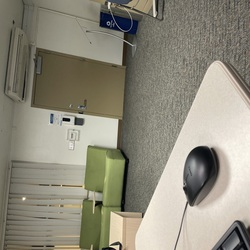

Heide Ortiz
Throughout my educational experience, I have been able to work alongside teachers and children. When I was in the eighth grade, I would volunteer to help out in classrooms for the third and fourth graders. For example, I would help them with their homework and any assignments that they needed to get done. Additionally, I would also help the teacher calm them down or get them to pay attention and stay on task. I really liked helping the kids because it taught me a lot about them and it showed me that it is a career that I could succeed in.
Moreover, I was also in choir for about six years and in choir I realized how important it is to work with another and understand each other. When we work together, we are able to get more done and we are able to do a better job. Choir really helped develop my people skills and it helped me become a better public speaker as well. For example, as the vice president of choir, it was my duty to give certain presentations in front of large audiences. A specific event in particular was when we went to different middle schools in hopes of recruiting more kids for choir. I had to give a speech on why I thought choir would be a great opportunity for them and how it would heavily impact their lives because in choir, you are able to build relationships with peers that will last a lifetime. As a result of these events, I was able to lose the fear I had for public speaking and little by little I was able to get better at speaking in front of large crowds.
Furthermore, throughout high school, I joined many clubs which showed me how important time management, communication, and collaboration are when it comes to getting a certain job done. For instance, through ASB I was able to realize how important it is to communicate with my peers in order to get things done on time. Additionally, other clubs such as Leo and Key Club showed me how important it is to be punctual and get things done on time. For instance, Leo offered many opportunities that students needed to take advantage of in order to get their hours to retain senior regalia. With this in mind, I knew that I had to set up my schedule a certain way to be able to have enough time for all that I needed and wanted to get done. All of these clubs definitely helped me become a better student which is why I have continued to be in clubs now in college. For example, one club I am currently in is Mujeres Unidas and this club has shown me thus far how important it is to build relationships because such relationships could be very beneficial for you in the long run.
Experience
Homeless Pets Club
• Took attendance in meetings
• Updated club with new information
• Helped perform fundraisers
ASB
• Working on bulletin boards
• Helped decorate for events
• Collaborated with others to set up for events
• Attended meetings and updated officers
Education
Arroyo High School
University of California Riverside
Portfolio

.png)
.jpg)
.jpg)